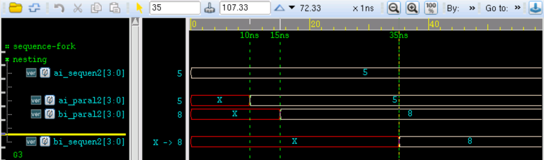
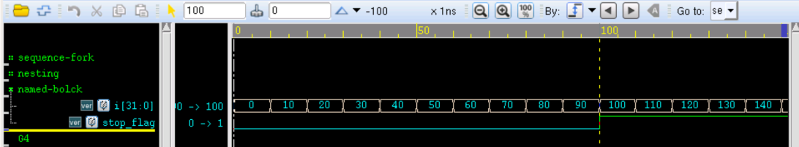

Palabras clave: bloque secuencial, bloque paralelo, bloque anidado, bloque nombrado, disable
Los bloques de sentencias Verilog proporcionan un mecanismo para agrupar dos o más sentencias en una estructura sintácticamente equivalente a una sola sentencia. Principalmente incluyen dos tipos: bloque secuencial y bloque paralelo.
Bloque secuencial
El bloque secuencial se representa con las palabras clave begin y end.
Las sentencias en un bloque secuencial se ejecutan una a una. Por supuesto, excepto las asignaciones no bloqueantes.
El retardo de cada sentencia en un bloque secuencial siempre está relacionado con el tiempo de ejecución de la sentencia anterior.
En las simulaciones anteriores de esta sección, las asignaciones bloqueantes en el bloque initial son ejemplos de bloques secuenciales.
Bloque paralelo
El bloque paralelo se representa con las palabras clave fork y join.
Las sentencias en un bloque paralelo se ejecutan en paralelo, incluso si son asignaciones en forma bloqueante.
El retardo de cada sentencia en un bloque paralelo está relacionado con el tiempo en que el bloque comienza a ejecutarse.
La diferencia entre el bloque secuencial y el bloque paralelo es evidente; a continuación se explica con una simulación.
El código de simulación es el siguiente:
Ejemplo
module test ;
reg [3:0] ai_sequen, bi_sequen ;
reg [3:0] ai_paral, bi_paral ;
reg [3:0] ai_nonblk, bi_nonblk ;
//============================================================//
//(1)Sequence block
initial begin
#5 ai_sequen = 4'd5 ; //at 5ns
#5 bi_sequen = 4'd8 ; //at 10ns
end
//(2)fork block
initial fork
#5 ai_paral = 4'd5 ; //at 5ns
#5 bi_paral = 4'd8 ; //at 5ns
join
//(3)non-block block
initial fork
#5 ai_nonblk <= 4'd5 ; //at 5ns
#5 bi_nonblk <= 4'd8 ; //at 5ns
join
endmodule
El resultado de la simulación es el siguiente:
Como se muestra en la figura, el bloque secuencial se ejecuta en orden; en el tiempo 10ns, la señal bi_sequen recién se asigna a 8.Mientras que en el bloque paralelo, las asignaciones de ai_paral y bi_paral se ejecutan simultáneamente, por lo que ambas se asignan en 5ns.
Y la asignación no bloqueante también puede lograr el mismo efecto de asignación que el bloque paralelo.

Bloque anidado
Los bloques secuenciales y paralelos también se pueden usar anidados.
El código de simulación es el siguiente:
Ejemplo
module test ;
reg [3:0] ai_sequen2, bi_sequen2 ;
reg [3:0] ai_paral2, bi_paral2 ;
initial begin
ai_sequen2 = 4'd5 ; //at 0ns
fork
#10 ai_paral2 = 4'd5 ; //at 10ns
#15 bi_paral2 = 4'd8 ; //at 15ns
join
#20 bi_sequen2 = 4'd8 ; //at 35ns
end
endmodule
El resultado de la simulación es el siguiente:
Dentro del bloque paralelo, las sentencias se ejecutan en paralelo, por lo que las señales ai_paral2 y bi_paral2 se asignan en 10ns y 15ns respectivamente. Y como el tiempo de ejecución más largo en el bloque paralelo es 15ns, la señal bi_sequen2 en el bloque secuencial se asigna en 35ns.

Bloque nombrado
Podemos nombrar las estructuras de bloques de sentencias.
En un bloque nombrado se pueden declarar variables locales, y se puede acceder a las variables mediante referencias por nombre jerárquico.
El código de simulación es el siguiente:
Ejemplo
module test;
initial begin: runoob //El nombre del módulo nombrado es runoob, el punto y coma no puede faltar
integer i ; //Esta variable puede ser utilizada por otros módulos mediante test.runoob.i
i = 0 ;
forever begin
#10 i = i + 10 ;
end
end
reg stop_flag ;
initial stop_flag = 1'b0 ;
always begin : detect_stop
if ( test.runoob.i == 100) begin //i se incrementa 10 veces, es decir, la simulación se detiene en 100ns
$display("Now you can stop the simulation!!!");
stop_flag = 1'b1 ;
end
#10 ;
end
endmodule
El resultado de la simulación es el siguiente:

Un bloque nombrado también puede ser deshabilitado, representado con la palabra clave disable.
disable puede terminar la ejecución de un bloque nombrado, y puede usarse para salir de un bucle, manejar errores, etc.
Es similar a break en C, pero break solo puede salir del bucle actual, mientras que disable puede deshabilitar cualquier bloque nombrado en el diseño.
El código de simulación es el siguiente:
Ejemplo
module test;
initial begin: runoob_d //El nombre del módulo nombrado es runoob_d
integer i_d ;
i_d = 0 ;
while(i_d<=100) begin: runoob_d2
# 10 ;
if (i_d >= 50) begin //Se incrementa 5 veces y se detiene la acumulación
disable runoob_d3.clk_gen ;//detener el bloque externo: clk_gen
disable runoob_d2 ; //detener el bloque actual: runoob_d2
end
i_d = i_d + 10 ;
end
end
reg clk ;
initial begin: runoob_d3
while (1) begin: clk_gen //Módulo generador de reloj
clk=1 ; #10 ;
clk=0 ; #10 ;
end
end
endmodule
El resultado de la simulación es el siguiente:
Como se puede ver en la figura, después de que la señal i_d se acumula hasta 50, ya no se acumula más, y a partir de entonces el reloj clk ya no se genera.
Se puede ver que disable sale del bloque while actual.

Cabe señalar que cuando disable se usa en un bloque always o forever, solo puede salir de la iteración actual; la próxima sentencia aún se ejecutará en always o forever. Debido a que los bloques always y forever se ejecutan continuamente, disable en este caso es algo similar a la función continue en C.
Haz clic para compartir notas
<p style="font-size:14px;">¡Las notas deben ser una extensión del contenido de este artículo!</p><br> <p style="font-size:12px;"><a href="../tougao.html" target="_blank">Para enviar un artículo, puedes hacer clic aquí</a></p> <p style="font-size:14px;"><a href="./runoob-user-test-intro.html" target="_blank">Cómo obtener el código de invitación de registro</a></p> <h3 class="text-muted"><i class="fa fa-info-circle" aria-hidden="true"></i> Antes de compartir notas debes <a href=".." class="runoob-pop">iniciar sesión</a>!</h3> <p><a href="./runoob-user-test-intro.html" target="_blank">Cómo obtener el código de invitación de registro</a></p>